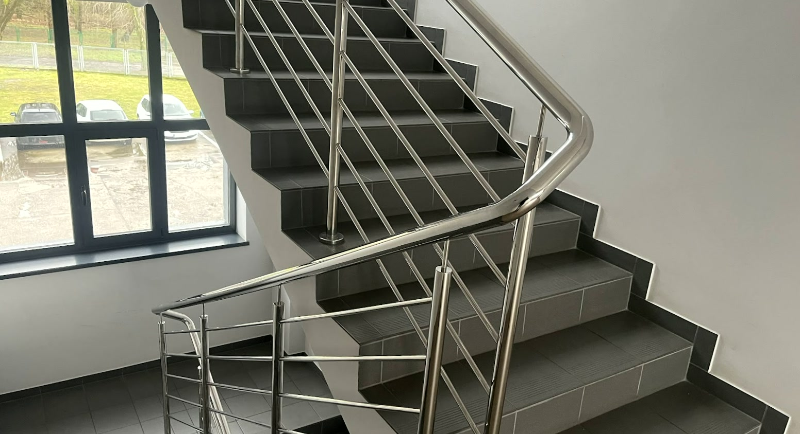
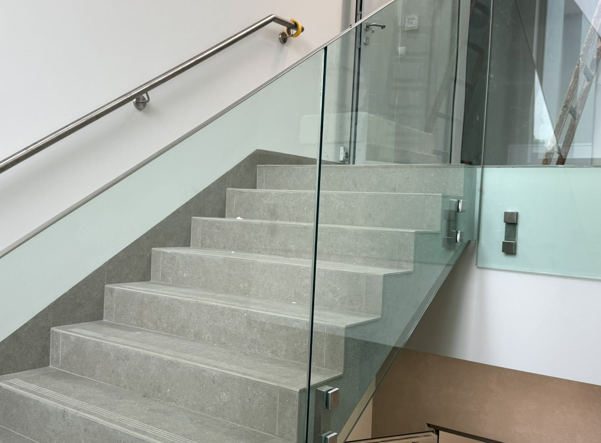
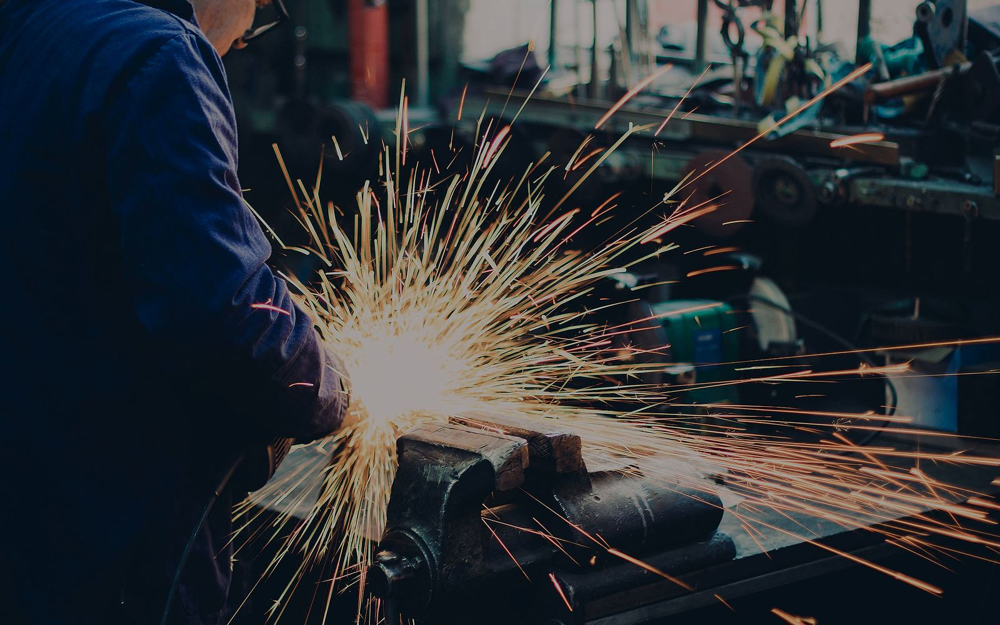

Balustrady nierdzewne na schody
Balustrady na schody wewnątrz domu i w budynkach. Robimy je pod Twoje schody, od pomiaru po montaż.
- Na słupkach z prętami
- Z linkami stalowymi
- Ze szkłem
Na wymiar, od projektu po montaż. Gorzów Wielkopolski i okolice.

Balustrady na schody wewnątrz domu i w budynkach. Robimy je pod Twoje schody, od pomiaru po montaż.

Poręcze przyścienne i wolnostojące ze stali nierdzewnej. Do domu, na klatki schodowe i do obiektów.

Stal nierdzewna dobrze znosi deszcz i mróz, dlatego sprawdza się na zewnątrz.

Szkło na uchwytach ze stali nierdzewnej. Daje dużo światła na schodach i antresolach, a trzyma pewnie.

Schody na konstrukcji ze stali. Projektujemy je pod konkretne pomieszczenie.

Robimy też elementy ze stali na zamówienie, nie tylko balustrady i schody.
Najwięcej pracujemy w stali nierdzewnej. Łączymy ją ze szkłem, drewnem i mosiądzem.
Napisz albo zadzwoń, co chcesz zrobić. Wycenimy to.